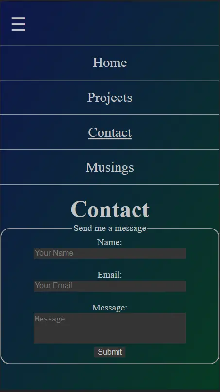

Projects
Project 1 - Exploding Kitchen (Recipe Website)
- Utilized JavaScript to build components in order to create a Single Page Application
- Created different stylings dependent on user preferences
- Utilized Local Storage in order to keep track of user changes

Project 2 - This Website
- Pure HTML/CSS implementation
- Utilized media queries in order to create responsive design

Project 3 - M1 Reports
- Utilized Crystal Reports in order to organize data from an SQL Server based application
- Managed SQL Server database fields and processes